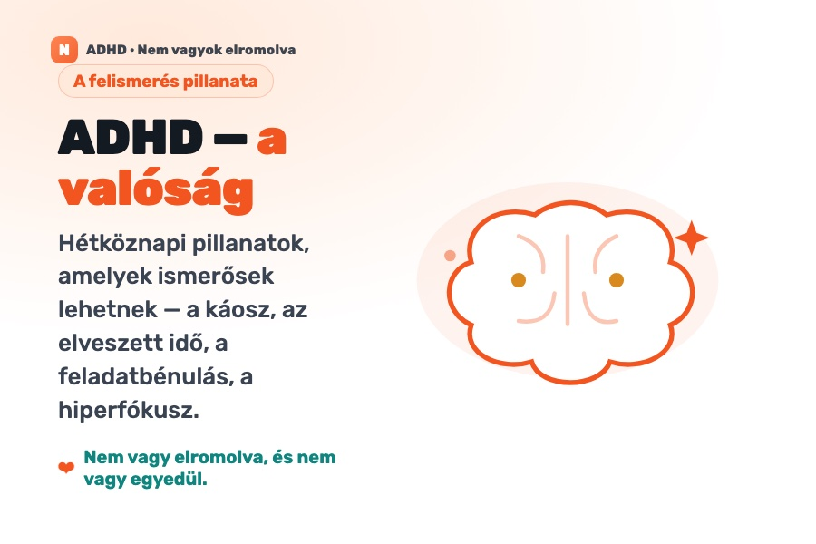
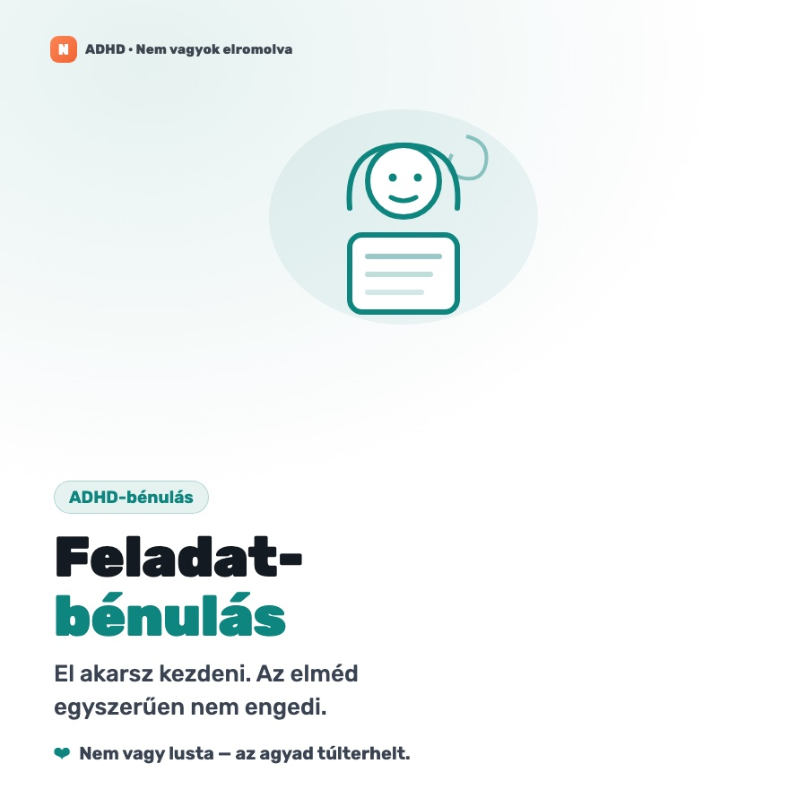
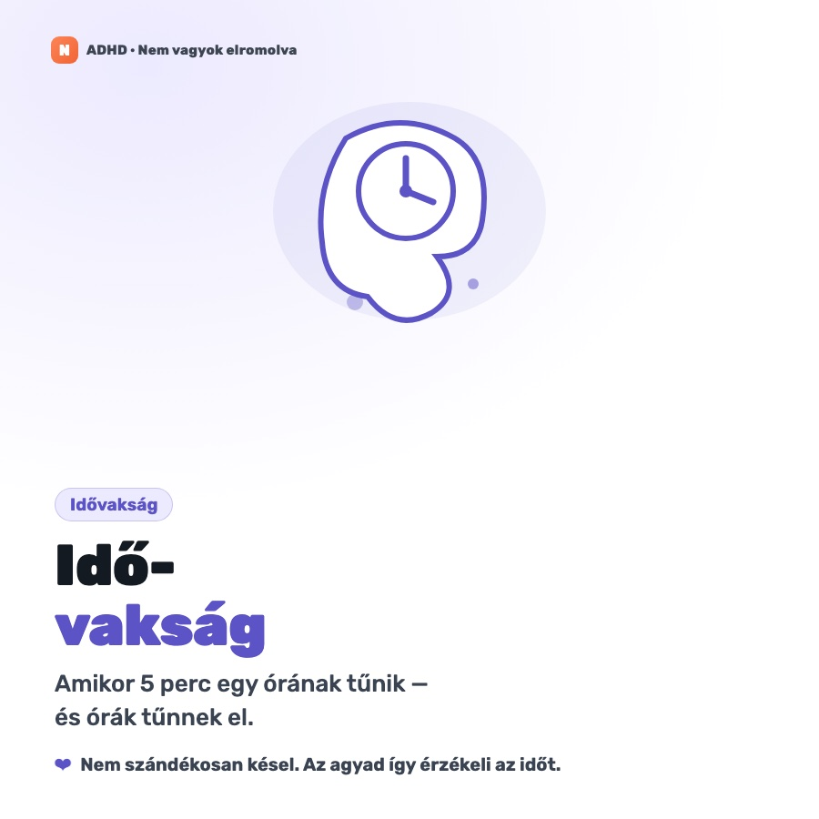
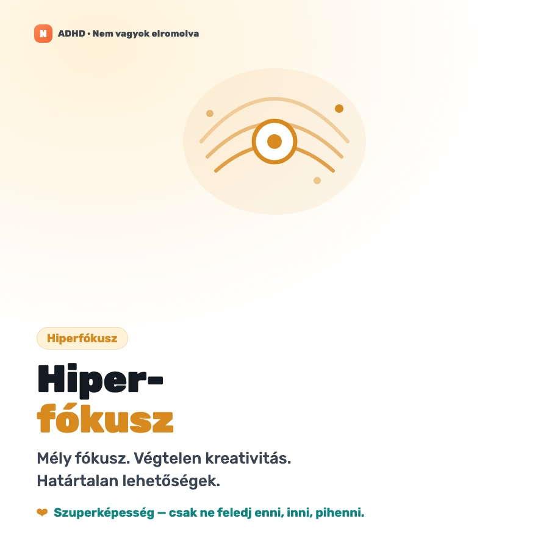
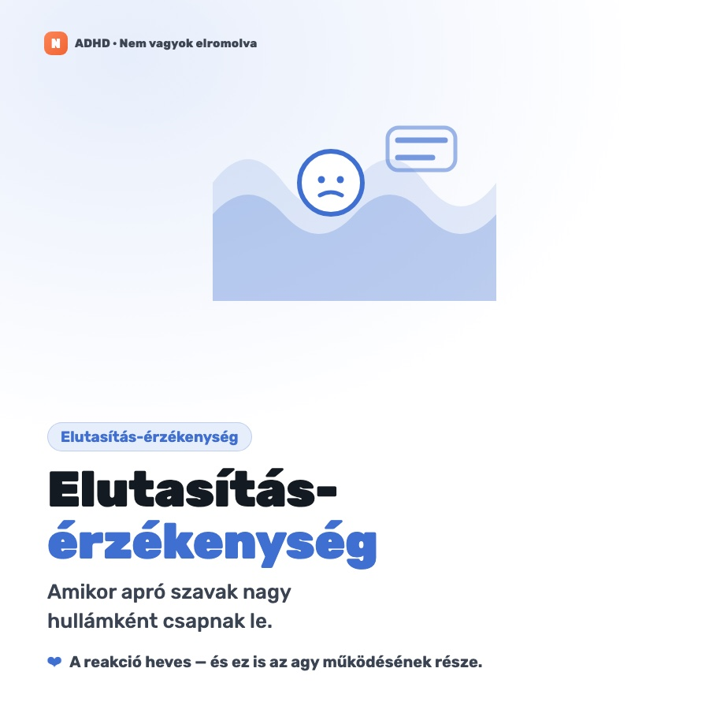
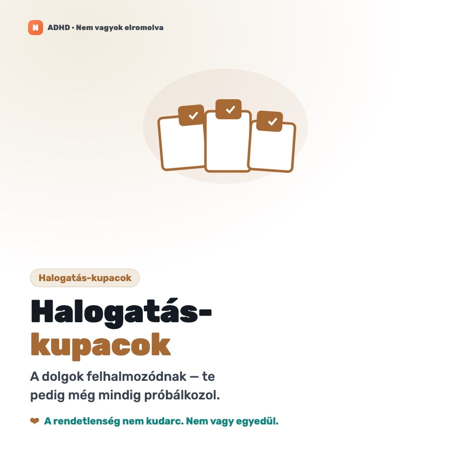
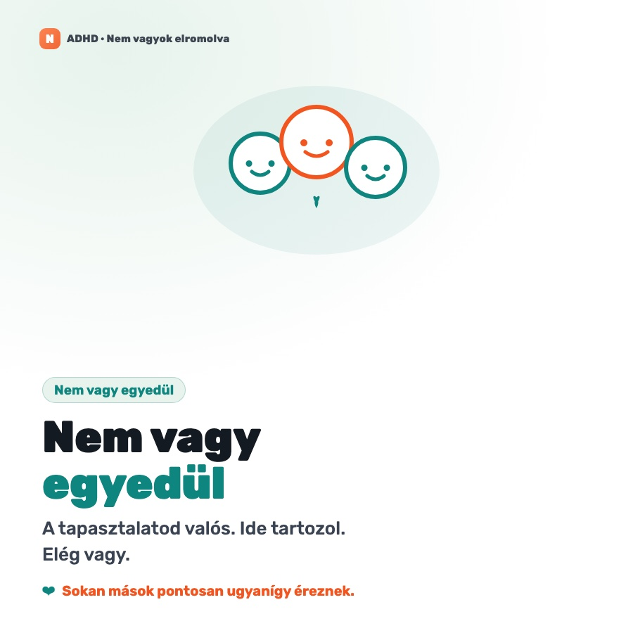

Az érdeklődés és az ingerlés jobban hajtja a fókuszt, mint a fontosság — innen a mély hiperfókusz egyes feladatokon, és a szinte nulla haladás másokon.
Ez oktatás, nem diagnózis. Az ADHD-t csak szakképzett klinikus diagnosztizálhatja. Semmi itt — az öntesztet is beleértve — nem orvosi vizsgálat, és nem helyettesíti a szakszerű ellátást. Ha bármi ismerősen cseng, vidd el orvoshoz, pszichológushoz vagy pszichiáterhez.
Nézd meg
Szánj rá egy percet
Ezekre rá fogsz ismerni
ADHD, képekben
A hétköznapi pillanatok — a halogatás-kupacok, az idővakság, a bénulás, a hiperfókusz. Ha ezek bármelyike ismerős: nem vagy elromolva, és nem vagy egyedül.







Ingyenes segédanyagok
Letölthető útmutatók
Nyomtatóbarát PDF segédanyagok és kitölthető naplók — tartsd meg, oszd meg, vagy vigyél el egy kitöltöttet egy rendelésre. Mind ingyenes.
Az ADHD (figyelemhiányos/hiperaktivitás-zavar) egy idegrendszeri fejlődési állapot, amely azt érinti, hogyan szabályozza az agy a figyelmet, az impulzusokat és az önirányítást. A dopamin-jelátvitel és az agy végrehajtó-funkciós hálózatainak eltéréseiben gyökerezik — nem az intelligenciában, az erőfeszítésben vagy a neveltetésben. Három elismert megjelenési formában mutatkozik.
01. FORMA
Figyelemzavaros
A csendes, könnyen átsiklott profil. A figyelem elkalandozik; a részletek elsikkadnak.
Elveszíti a fókuszt, elnézi a részleteket
Feledékeny, rendezetlen
Kerüli a tartós szellemi erőfeszítést
Gyakran hibásan „álmodozónak” vagy „lustának” bélyegzik
02. FORMA
Hiperaktív-impulzív
A nyughatatlan, előbb-cselekvő profil. Az energia és az impulzus lehagyja a féket.
Fészkelődő, nyughatatlan, „mintha motor hajtaná”
Közbevág, kimondja, gondolkodás előtt cselekszik
Nehezére esik várni vagy nyugton ülni
Türelmetlen a lassú tempóval
03. FORMA
Kombinált
A leggyakoribb forma — jelentős vonások a fenti kettő mindkettőjéből.
Figyelmetlenség és hiperaktivitás
A megjelenés a korral változhat
A hiperaktivitás felnőttkorban gyakran befelé fordul
Összességében ezt diagnosztizálják a leggyakrabban
Kutatás & adatok
Mit mondanak a bizonyítékok
Az ADHD a pszichiátria egyik legtöbbet kutatott állapota. Az alábbi számok nagy metaanalízisekből és diagnosztikai kézikönyvekből származó konszenzusos becslések — tartományok, nem pontos értékek, mert a gyakoriság attól függ, hogyan és hol mérik.
~5–7%
a gyerekek közül világszerte megfelel a diagnosztikai kritériumoknak
~2,5–4%
a felnőttek közül él ADHD-val, gyakran diagnózis nélkül
~74%
örökölhetőség — a pszichiátria egyik leginkább genetikai állapota
~60%
a gyermekkori esetek közül érdemi tünetekkel lép a felnőttkorba
A valódi hiányosság a végrehajtó funkció
A „figyelemhiány” félrevezető elnevezés. A lényegi nehézség az önszabályozás — az agy vezetői készségeinek együttese, amelyek a szándékot cselekvéssé alakítják. Amikor ezek másképp működnek, a „tudom, mit kell tenni” és a „meg is teszem” szétválik.
Munkamemória
Az információ elég sokáig „vonalban tartása”, hogy használni tudd — utasítások, feladat közbeni lépések, hogy miért is jöttél be a szobába.
Gátlás
A szünet impulzus és cselekvés között. A figyelemelterelők szűrése, a kitérők elutasítása, a ki nem mondás.
Feladatindítás
Az elkezdés — a fal a „kellene” és a valódi kezdés között, még olyan dolgoknál is, amiket szeretnél megtenni.
Időérzékelés
„Idővakság” — gyenge érzék arról, mennyi ideig tart valami és mennyi telt el. Most vs. nem-most.
Érzelemszabályozás
Az érzések erősségének és időtartamának kezelése. A frusztráció, az elutasítás és az izgalom keményebben csap le.
Kognitív rugalmasság
Sebességváltás, feladatváltás és alkalmazkodás, ha a terv változik — anélkül, hogy elakadnál vagy elárasztana.
Az együttjárásról: az ADHD ritkán jár egyedül. A szorongás, a depresszió, az alvászavarok és a tanulási eltérések (mint a diszlexia) gyakori kísérők — ez az egyik oka, hogy az öndiagnózis megbízhatatlan, és számít a szakszerű felmérés.
A számok olyan forrásokból származó becsléseket tükröznek, mint a DSM-5-TR, a World Federation of ADHD és publikált metaanalízisek. Tájékozódásként kezeld őket, nem pontosságként.
Vészjelek & jelek
Mire figyelj
Az ADHD egy életen át másképp néz ki. Ezek a mintázatok akkor válnak jelentőssé, ha tartósak, egynél több helyzetben jelen vannak, és valóban zavaróak — nem a rossz nap, ami mindenkinek akad. A szín jelzi, mennyire mutat az egyes tényező a felmérés felé.
Krónikus halogatás & befejezetlen projektek
Erős kezdés, elakadás, és félkész dolgok temetője — pedig fontosak számodra.
Idővakság & késés
Az idő állandó alábecslése, órák elvesztése, határidők elmulasztása erőfeszítés és emlékeztetők ellenére is.
Érzelmi szabályozatlanság
Gyors, heves reakciók; alacsony frusztrációtűrés; az elutasítás éles megélése (gyakran RSD-nek nevezik).
Rendezetlenség & elveszett tárgyak
Kulcs, tárca, telefon, határidők, beszélgetésfonalak — rendszeresen átcsúsznak a réseken.
Impulzivitás
Közbevágás, impulzusvásárlás, hirtelen döntések, kimondás — cselekvés, mielőtt a következmény tudatosulna.
Belső nyugtalanság
Befelé fordult hiperaktivitás: száguldó elme, nehéz ellazulás, állandó ingerigény.
Hiperfókusz a rossz dolgokon
Órák tűnnek el egy lebilincselő dolgon, míg a sürgős, de unalmas feladatok megérinthetetlenek.
Az ügyintézés túlterhel
Űrlapok, e-mailek és elintéznivalók bénító hátralékká állnak össze, a tényleges méretükhöz képest aránytalanul.
Nem tudja tartósan fenntartani a figyelmet
Figyelmetlen hibák, befejezetlen iskolai munka, mintha nem hallaná, amikor közvetlenül szólnak hozzá.
Állandó mozgás
Nem tud ülve maradni, rossz időben mászik és rohan, „mindig úton van”, szüntelenül fészkelődik.
Kimondás & nem tud sorra várni
Válaszol, mielőtt a kérdés véget érne, félbeszakít játékokat és beszélgetéseket, nehezen vár.
Elveszít és elfelejt dolgokat
Házi feladat, kabát, felszerelés; elfelejti a napi rutinokat és a többlépéses utasításokat.
Könnyen elterelhető
Bármilyen látvány vagy hang eltéríti a feladattól; befejezés nélkül ugrál a tevékenységek között.
Kerüli a tartós szellemi erőfeszítést
Ellenáll a házi feladatnak, vagy retteg tőle, és minden feladattól, ami üldögélést és koncentrációt igényel.
Nagy érzelmi reakciók
Kiborulások, gyors frusztráció, és nehéz megnyugvás a hasonló korú társakhoz képest.
Nehézségek a barátságokban
Az impulzivitás és a lemaradt társas jelzések nehezítik a kortárskapcsolatok fenntartását.
Erős jelzőFigyelemre méltó mintázatKiegészítő jel
A felmérésről
Hogyan diagnosztizálják az ADHD-t
Az ADHD diagnózisa klinikai — nincs olyan vérvizsgálat, agyi képalkotás vagy számítógépes teszt, amely önmagában elég pontos lenne a diagnózishoz. Egy képzett klinikus ezeket ötvözi:
A klinikai felmérés — a mérce
1
DSM-5-TR / ICD-11 kritériumok
A tüneteket a hivatalos kritériumokhoz illesztik: 6+ zavaró tünet a figyelmetlenség vagy a hiperaktivitás-impulzivitás terén (17 éves kortól 5+), 2+ helyzetben, 12 éves kor előtti kezdettel, valódi károsodást okozva, és nem magyarázható jobban más állapottal.
2
Strukturált klinikai interjú
A képzett klinikus részletes anamnézist vesz fel a tünetekről, a fejlődésről és a napi hatásról. Ez a diagnózis gerince.
3
Több forrásból származó anamnézis
Beszámolók szülőktől, tanároktól és — felnőtteknél — partnertől vagy családtagtól. Az önbevallás önmagában alulbecsli a valós károsodást.
4
Validált tünetbecslő skálák
Szabványosított kérdőívek (Vanderbilt, Conners, ASRS), amelyek pontozzák a tüneteket. Támogatják a kritérium-alapú interjút, de nem helyettesítik.
5
Differenciáldiagnózis
A hasonló képet adó állapotok kizárása: pajzsmirigybetegség, alvászavarok, hangulati vagy szorongásos zavarok, szerhasználat és fejsérülés (TBI).
6
Neuropszichológiai tesztelés
A legtöbb esetben nem szükséges a diagnózishoz, de feltérképezheti a konkrét tanulási erősségeket és gyengeségeket.
Objektív / technológiai eszközök — csak támogató jelleggel
7
Folyamatos teljesítménytesztek (CPT-k)
Számítógépes feladatok (TOVA, Conners CPT, QbTest/QbCheck), amelyek a figyelmetlenséget (elmulasztott célok), az impulzivitást (hibás válaszok) és a reakcióidő ingadozását mérik; némelyik infravörös kamerával a mozgást is követi.
8
Hasznos — de sosem önmagában
Klinikai felméréshez adva az olyan eszközök, mint a QbTest, gyorsíthatják a diagnózist, csökkenthetik a rendelések számát és segíthetik a gyógyszerkövetést. De semmilyen számítógépes teszt, biomarker, EEG vagy képalkotás nem elég pontos ahhoz, hogy önmagában diagnosztizálja az ADHD-t — ezek kiegészítők, nem helyettesítők.
Az ADHD-t csak szakképzett klinikus diagnosztizálhatja. Egy önteszt (mint az ezen az oldalon lévő) utalhat arra, érdemes-e felmérést kérni — diagnosztizálni nem tud.
Egy életen át
ADHD gyerekeknél vs felnőtteknél
Ugyanaz az állapot — de másképp mutatkozik, ahogy az ember növekszik. Íme, mi közös, és mi változik.
Mi marad ugyanaz
Ugyanaz az alapvető huzalozás — különbségek a figyelemben, az impulzuskontrollban és az aktivitásban, a dopaminhoz/noradrenalinhoz és a prefrontális kéreghez kötve.
Mindig gyermekkorban kezdődik — még ha csak felnőttkorban ismerik is fel, a jelek 12 éves kor előtt már megvoltak.
Végrehajtó-funkciós nehézségek — tervezés, munkamemória, idő- és érzelemszabályozás — mindkettőnél.
Ugyanazokra a kezelési elvekre reagál — gyógyszer plusz struktúra és viselkedéses támogatás.
Gyakran ugyanazoknál marad rejtve — lányoknál és nőknél, és a csendes, figyelemzavaros típusnál.
Mi változik
Gyerekek
Felnőttek
Hiperaktivitás
Látható — futkosás, mászás, nem tud nyugton ülni
Belső nyugtalanság — a „hajtottság” érzése, fészkelődés
Szorongás, depresszió, alacsony önértékelés a diagnózis nélkül eltöltött évektől
Hogyan veszik észre
Tanárok és szülők veszik észre
Gyakran maga ismeri fel — néha egy gyermek diagnózisa után
Diagnózisküszöb
6+ tünet
5+ tünet (17 éves kortól)
Mítoszok vs. tények
A tévhitek tisztázása
Az ADHD az egyik legfélreértettebb állapot. A megbélyegzés elavult elképzelésekből ered — íme, mit mond valójában a bizonyíték.
Mítosz„Az ADHD nem valódi — csak rossz fegyelem vagy rossz nevelés.”
TényAz ADHD egy jól megalapozott idegrendszeri fejlődési állapot, mérhető agyi és genetikai eltérésekkel, amelyet minden nagy orvosi szervezet elismer. A szabályozásról szól, nem az akaraterőről.
Mítosz„Csak a hiperaktív kisfiúknak van ADHD-juk.”
TényMinden nemet és életkort érint. A lányokat és a nőket széles körben aluldiagnosztizálják, mert a figyelemzavaros vonások csendesebbek, és sokakat csak felnőttként ismernek fel.
Mítosz„Kinövöd majd.”
TényA gyerekek nagyjából 60%-a érdemi tünetekkel lép a felnőttkorba. A hiperaktivitás gyakran csak befelé fordul nyugtalanságként, ahelyett hogy eltűnne.
Mítosz„A gyógyszer mankó vagy személyiségváltozás.”
TényA legtöbb embernél a helyesen adagolt gyógyszer csökkenti a tüneteket anélkül, hogy megváltoztatná, kik ők — akárcsak a szemüveg a látáshoz. Bizonyítékokon alapul, nem gyorsítómegoldás.
Mítosz„Ha képes vagy videójátékra fókuszálni, nem lehet ADHD-d.”
TényAz ADHD a figyelem szabályozásának problémája, nem a hiányáé. Az ingerlő, nagy jutalmú feladatokon való hiperfókusz klasszikus jellemző.
Mítosz„Manapság mindenki kicsit ADHD-s.”
TényNéha mindenki elterelődik. Az ADHD tartós, egész életen át tartó mintázat, amely több helyzetben is jelentősen rontja a mindennapi működést — klinikai küszöb, nem személyiségjegy.
Önreflexiós eszköz
Egy gyors önteszt
Jelöld be, ami valóban ráillik a mindennapi tapasztalatodra az elmúlt hat hónapban. Ez egy reflexiós kérdéssor, nem teszt — semmit sem diagnosztizál. Azért készült, hogy segítsen eldönteni, érdemes-e beszélned egy szakemberrel.
0
Jelöld be az állításokat, amelyek igaznak csengenek nálad.
Ne feledd: sokan magukra ismernek néhányban egy stresszes héten. Klinikailag az számít, ha következetes, egész életen át tartó mintázat, amely több helyzetben rontja a mindennapi működést — ezt csak képzett klinikus tudja értékelni.
Fókusz-eszközök
Próbáld ki a stratégiákat itt helyben
Két legtöbbet ajánlott ADHD-technika, beépítve és használatra készen. Minden, amit begépelsz, a saját böngésződben marad — semmi nem kerül sehová.
Pomodoro-időzítő
Dolgozz rövid, véges sprintekben, hogy legyőzd az „elkezdés” falát. 25 perc munka, 5 pihenés.
Fókuszülés
25:00
Agyürítés
Vidd ki a kavargó gondolatokat a fejedből a papírra. Gépelés közben automatikusan ment.
Helyben mentve
Hogyan bánj vele
Stratégiák, amelyek tényleg működnek
Az ADHD-t nem lehet túlfegyelmezni — állványzatot építesz köré. A nyerő megközelítés szinte mindig kombinált: külső rendszerek + támogató szokások + szakszerű kezelés. Íme az eszköztár, kezdve azzal, amit magad is megtehetsz.
Vigyél ki mindent
Vidd ki a fejedből
A munkamemória megbízhatatlan, ezért ne támaszkodj rá. Tedd láthatóvá a láthatatlant.
Egyetlen gyűjtő-postaláda minden feladatnak és ötletnek
Emlékeztetők és riasztók az időhöz kötött dolgokra
Látható órák és időzítők az idővakság ellen
„Mindennek helye van” — hogy ne veszíts el tárgyakat
Csökkentsd az indítás költségét
Tedd könnyebbé az elkezdést
A feladatindítás a legnehezebb fal. Zsugorítsd, míg az átlépés triviálissá válik.
Bontsd a feladatokat abszurd módon apró első lépésekre
Timeboxing / Pomodoro — dolgozz rövid sprintekben
„Testtárs” — dolgozz valaki mellett
Távolíts el egy súrlódási pontot, mielőtt elkezded
Alakítsd a környezetet
Csökkentsd a körülötted lévő súrlódást
Az akaraterő véges; a környezet állandó. Változtass a szobán, ne csak az elhatározáson.
Vágd vissza a figyelemelterelést: értesítések ki, telefon félre
Egy feladat egyszerre; zárd be a felesleges füleket
Rutinok és ellenőrzőlisták az ismétlődő dolgokra
Újdonság szándékosan — cserélgesd az eszközöket és elrendezéseket
Tápláld a rendszert
Védd a biológiai alapokat
Az alvás, a mozgás és az étel nem mellékküldetés — közvetlenül mozdítják a tüneteket.
Következetes alvás — a legnagyobb egyetlen emelő
A rendszeres mozgás növeli a dopamint & a fókuszt
Fehérjében gazdag étkezések; ne hagyd ki őket
Kezeld a stresszt — mindent felerősít
Szakszerű kezelés
Az önsegítés a megfelelő ellátás tetején működik a legjobban. Ezek a bizonyítékokon alapuló pillérek — mind szakképzett klinikussal eldöntve, sosem önmagadnak felírva.
Felmérés
Az anamnézis, a tünetek és a hatás strukturált értékelése — az egyetlen út a valódi diagnózishoz és minden más kiindulópontja.
Gyógyszer
A stimuláns és non-stimuláns lehetőségek jelentősen javíthatják a fókuszt és az impulzuskontrollt. Kizárólag orvos írja fel, adagolja és követi.
Terápia & coaching
A CBT és az ADHD-coaching gyakorlati készségeket épít, átkeretezi az önvádat, és kezeli a szorongást vagy a rossz hangulatot, amely oly gyakran vele jár.
Élet ADHD-val
Hogyan mutatkozik meg a valós életben
Az ADHD nem marad egy sávban — érinti a munkát, a tanulást, a kapcsolatokat és az identitást. Nyiss meg egy témát, hogy lásd, hogyan szokott lejátszódni és mi segít.
A munkában & iskolában
A határidők, az ügyintézés, a megbeszélések és a hosszú, egyedül végzett feladatok fájnak a legjobban ADHD-val — de a struktúra és az érdeklődés megfordítja.
Bontsd a nagy projekteket látható, apró mérföldkövekre, saját határidőkkel
Kérdezz rá az ésszerű alkalmazkodásokra — csendes tér, írásos utasítások, rugalmas munkaidő, határidő-emlékeztetők
Használj „fókusz-sprinteket”, zajszűrő fejhallgatót és egyfüles munkamódot
Játssz az erősségeidre: kreativitás, problémamegoldás, energia válságban, hiperfókusz a lebilincselő munkán
Kapcsolatok
Az elfelejtett tervek, a közbevágás vagy az érzelmi intenzitás „nemtörődömségnek” tűnhet. A mechanizmus megnevezése segít, hogy a partnerek és barátok csapatként reagáljanak, ne hibáztatással.
Vidd ki a közös vállalásokat — a közös naptár jobb, mint az „emlékezni fogok”
Nevezd meg a mintázatokat hangosan: „ez az idővakságom, nem a fontossági sorrendem”
Figyelj az elutasítás-érzékenységre, és várj egy pillanatot, mielőtt reagálsz
A pár- vagy családterápia átkeretezheti az ismétlődő súrlódást
Nők & késői diagnózis
Sok nőt és lányt évtizedekig nem vesznek észre, mert a vonásaik inkább figyelemzavarosak és befelé fordulók. A késői diagnózis gyakori — és gyakran hatalmas megkönnyebbülés.
A vonásokat elfedi a szorongás, a perfekcionizmus vagy a megfelelési vágy
A tünetek felerősödhetnek hormonális változásokkal (ciklus, terhesség, menopauza)
Az évekig tartó „szórakozott” címke csorbíthatja az önértékelést — a diagnózis átírja a történetet
Sosem késő felmérést és támogatást kérni
Együttjáró állapotok
Az ADHD ritkán jár egyedül. Annak felismerése, mi jár vele együtt, kulcs a megfelelő támogatáshoz — és az egyik oka, hogy az öndiagnózis megbízhatatlan.
Szorongás és depresszió — nagyon gyakori kísérők
Tanulási eltérések, mint a diszlexia és a diszkalkulia
Alvásproblémák, amelyek minden más tünetet felerősítenek
Átfedés az autizmus spektrummal; és ha kezeletlen, magasabb a kiégés kockázata
Gyógyszer-útmutató
Az ADHD-gyógyszerek minden osztálya
A gyógyszer az ADHD egyik leghatékonyabb eszköze, de nincs egyetlen „legjobb” szer — a megfelelő molekula és adag egyénhez illesztéséről van szó. Alább minden fő típus, mindegyiknél az előnyök és hátrányok őszinte mérlegével.
Ez nem recept és nem orvosi tanács. Soha ne kezdj el, hagyj abba, válts vagy adagolj ADHD-gyógyszert egyedül. Itt minden lehetőség kizárólag receptre kapható, az egyéni válasz óriási mértékben eltér, és a helyes választás a teljes kórtörténetedtől függ. Ez a lista arra való, hogy tájékozott beszélgetést folytass egy felíró orvossal — semmi több.
Első vonalStimulánsok
Növelik a dopamint és a noradrenalint az agy figyelmi köreiben. Az emberek nagyjából 70–80%-a reagál, gyakran még aznap. Két kémiai család: metilfenidát és amfetamin.
Lehetséges „visszacsapás” vagy ingerlékenység, ahogy kikopik
Óvatosság szívbetegség vagy erős szorongás esetén
AlternatívaNon-stimulánsok
Másképp hatnak — főként a noradrenalinra vagy az agy alfa-receptoraira. Lassabban indulnak be, de nem ellenőrzöttek, egyenletesebb egész napos lefedettséggel. Akkor választják, ha a stimulánsok nem megfelelők.
Előnyök
Nem ellenőrzött szerek; nincs visszaélési potenciál
Egyenletes 24 órás lefedettség, nincs „kikopás”
Jó, ha szorongás, tik vagy alvás a gond
Kombinálható stimulánssal
Hátrányok
2–6 hét kell a teljes hatáshoz
Átlagosan kevésbé hatékonyak, mint a stimulánsok
Fáradtságot, hányingert vagy alacsony vérnyomást okozhatnak
Némelyik külön követési figyelmeztetést hordoz
Metilfenidát
Ritalin · Concerta · Medikinet · Equasym
Stimuláns
Metilfenidát-osztályIR 3–4 ó · XL 8–12 ó
A világon a legtöbbet felírt ADHD-gyógyszer. Gátolja a dopamin visszavételét. Rövid hatású (Ritalin) vagy hosszú hatású (Concerta) formában, így a lefedettség a naphoz szabható.
Előnyök
Óriási múlt, gyerekeknél is
Finoman hangolható adag
A hosszú hatású verziók kitartanak egy iskolai/munkanapot
Hátrányok
Étvágy & alvás visszaszorítása
Több napi adag az IR formánál
Visszacsapás-mélypont, ahogy kikopik
Dexmetilfenidát
Focalin · Focalin XR
Stimuláns
Metilfenidát-osztályFinomított izomer
A metilfenidát aktív „d-izomere” — lényegében egy töményebb, tisztább változat, így alacsonyabb adag ugyanazt teszi.
Előnyök
Alacsonyabb adagnál is hatékony
Egyesek kevesebb mellékhatást tapasztalnak
Egyenletes XR opció
Hátrányok
Ugyanazok az osztályszintű stimuláns-kockázatok
Drágább lehet a generikus MPH-nál
Metilfenidát — tapasz & folyadék
Daytrana (tapasz) · Quillivant / Quillichew
Stimuláns
Metilfenidát-osztályNem tablettás bevitel
Alternatív formák azoknak, akik nem tudnak tablettát lenyelni — bőrtapasz, amit levéve véget vetsz a hatásnak, vagy rágható/folyékony adag.
Előnyök
Nincs szükség tablettalenyelésre
A tapasszal szabályozhatod a „kikapcsolás” idejét
Könnyű adagfelezés gyerekeknek
Hátrányok
A tapasz bőrirritációt okozhat
Lassabb be-/kikapcsolás a tapasszal
Vegyes amfetaminsók
Adderall · Adderall XR
Stimuláns
Amfetamin-osztályIR 4–6 ó · XR 10–12 ó
Amfetaminsók keveréke, amelyek egyszerre szabadítják fel és gátolják a dopamin visszavételét. Adagra vetítve gyakran erősebb, mint a metilfenidát.
Előnyök
Nagyon hatékony; tovább tart, mint az IR MPH
Sokaknál működik, akik nem reagálnak MPH-ra
Olcsó generikumok elérhetők
Hátrányok
Magasabb visszaélési potenciál, mint az MPH
Egyeseknél több étvágy-/alvás-/vérnyomáshatás
Fokozhatja a szorongást vagy ingerlékenységet
Liszdexamfetamin
Vyvanse · Elvanse
Stimuláns
Amfetamin-osztályProdrug · 10–14 ó
Egy inaktív „prodrug”, amelyet a szervezet lassan alakít aktív amfetaminná. Ez a fokozatos felszabadulás egyenletes, hosszú lefedettséget és alacsonyabb visszaélési plafont ad.
Előnyök
Egyenletes, hosszú, egész napos hatás
Alacsonyabb visszaélési potenciál (prodrug)
Kevésbé kifejezett visszacsapás
Hátrányok
A bevétel után nem hangolható az időzítés
Gyakran drágább (márkás)
Ugyanaz az amfetamin-mellékhatásprofil
Dexamfetamin
Dexedrine · Mydayis · Zenzedi
Stimuláns
Amfetamin-osztályIR 4–6 ó · Mydayis akár 16 ó
Tiszta dextroamfetamin. Régóta bevált lehetőség; a Mydayis egy kifejezetten hosszú napra tervezett, elnyújtott készítmény.
Előnyök
Egyszerű, jól ismert molekula
Ultra-hosszú opció (Mydayis)
Hatékony és kiszámítható
Hátrányok
A hosszú készítmények zavarhatják az alvást
Az osztályszintű stimuláns-óvatosságok érvényesek
Atomoxetin
Strattera
Non-stimuláns
SNRI24 órás · nem ellenőrzött
Az első ADHD-ra jóváhagyott non-stimuláns. A noradrenalint emeli a visszavétel gátlásával. Hetek alatt épül fel, nem az első napon hat.
Előnyök
Nem ellenőrzött szer; nincs „belövés”
Egyenletes 24 órás lefedettség, a reggeleket is beleértve
Jó szorongás vagy szerhasználati előtörténet mellett
Hátrányok
4–6 hét kell a teljes hatáshoz
Hányinger, fáradtság, szexuális mellékhatások
Ritka hangulati/máj-hatásokra figyelmeztet — követik
Viloxazin
Qelbree
Non-stimuláns
SNRINaponta egyszer · újabb
Egy újabb non-stimuláns (gyerekeknek és felnőtteknek jóváhagyva), amely szintén a noradrenalinra hat, némi szerotonin-aktivitással. Napi egyszeri adagolás.
Előnyök
Egyeseknél gyorsabban hat, mint az atomoxetin
Nem ellenőrzött, napi egyszer
Gyerekeknek és felnőtteknek egyaránt opció
Hátrányok
Álmosság, csökkent étvágy, fejfájás
Több más gyógyszerrel kölcsönhatásba lép
Hangulatkövetési figyelmeztetés érvényes
Guanfacin & Klonidin
Intuniv (guanfacin) · Kapvay (klonidin)
Non-stimuláns
Alfa-2 agonistákGyakran kiegészítő
Eredetileg vérnyomáscsökkentők; lecsillapítják az idegrendszer túlműködését. Különösen hasznosak hiperaktivitásnál, impulzivitásnál, tikeknél és alvásnál — gyakran stimulánshoz adva.
Előnyök
Kiváló hiperaktivitásra, tikekre és alvásra
Nem ellenőrzött; kombinálható stimulánsokkal
Enyhítheti az esti „visszacsapást”
Hátrányok
Szedáció, szédülés, alacsony vérnyomás
Nem szabad hirtelen abbahagyni
Gyengébb hatás a lényegi figyelmetlenségre
Bupropion & egyéb off-label
Wellbutrin · triciklusos antidepresszánsok
Off-label
AntidepresszánsOff-label ADHD-ra
Hivatalosan nincs jóváhagyva ADHD-ra, de néha off-label felírják — különösen ha depresszió is fennáll. A bupropion a dopaminra és a noradrenalinra hat.
Előnyök
Az együttjáró depressziót is kezeli
Nem ellenőrzött; nincs visszaélési potenciál
Opció, ha más nem válik be vagy nem tolerálható
Hátrányok
Off-label — gyengébb ADHD-bizonyíték
A bupropion csökkentheti a görcsküszöböt
A lényegi tünetekre általában kevésbé hatékony
Egymás melletti összehasonlítás
Ugyanazok a gyógyszerek egy pillantásra. Kattints bármelyik oszlopfejlécre a rendezéshez — hasznos, ha a hatáskezdetet, a hatástartamot vagy azt mérlegeled, ellenőrzött szer-e.
Gyógyszer↕
Típus↕
Osztály↕
Hatáskezdet↕
Hatástartam↕
Ellenőrzött?↕
Metilfenidát
Stimuláns
Metilfenidát
~30–60 perc
3–12 ó
Igen
Dexmetilfenidát
Stimuláns
Metilfenidát
~30–60 perc
4–12 ó
Igen
Amfetaminsók
Stimuláns
Amfetamin
~30–60 perc
4–12 ó
Igen
Liszdexamfetamin
Stimuláns
Amfetamin
~1–2 ó
10–14 ó
Igen
Dexamfetamin
Stimuláns
Amfetamin
~30–60 perc
4–16 ó
Igen
Atomoxetin
Non-stim
SNRI
2–6 hét
24 ó
Nem
Viloxazin
Non-stim
SNRI
1–2 hét
24 ó
Nem
Guanfacin / Klonidin
Non-stim
Alfa-2 agonista
1–2 hét
12–24 ó
Nem
Bupropion
Non-stim
Antidepresszáns
2–6 hét
Egész nap
Nem
Hogyan zajlik általában a felírás: a legtöbb irányelv stimulánssal kezd, kipróbálja, majd a válasz és a mellékhatások alapján állítja az adagot vagy vált osztályt. A megfelelő megtalálása gyakran több próbát igényel — ez normális, nem kudarc. A márkanevek országonként eltérnek; ugyanaz a molekula máshol más néven futhat.
A felíró orvosodnak
Kövesd a gyógyszerpróbáidat
A gyógyszer beállításának egyik legnehezebb része emlékezni arra, mit is próbáltál ki, és mindegyik hogyan hatott. Rögzítsd itt menet közben — majd vidd el a feljegyzést, vagy add hozzá az öntesztben lévő orvosi összefoglalódhoz a következő rendelésedre. A készüléken marad, privátban.
Önérdek-érvényesítés
Hogyan érvényesítsd magad az orvosnál
A komolyan vétel lehet a legnehezebb lépés — főleg, ha korábban már lekezeltek. Íme, hogyan menj be felkészülten, és távozz tervvel.
01. LÉPÉS
Gyere bizonyítékkal, ne csak érzésekkel
Egy homályos „nem tudok fókuszálni” könnyen elhessegethető. Hozz konkrétumokat.
Konkrét példák a munkából, tanulásból, otthonról és kapcsolatokból
Mióta tart — ideális esetben gyermekkortól
Bármilyen családi előtörténet ADHD-val vagy rokon állapotokkal
Használd az ezen az oldalon lévő öntesztet és orvosi összefoglalót
02. LÉPÉS
Nevezd meg a hatást az életed egészében
A diagnózis egynél több helyzetben fennálló károsodáson nyugszik — szóval fejtsd ki ezt.
Elmulasztott határidők, elvesztett állások, pénzügyi gondok
Feszültség a kapcsolatokban, alacsony önértékelés
Mondd ki nyíltan: „ez rontja a mindennapi működésemet”
03. LÉPÉS
Kérdezz közvetlenül — és ne állj meg a „nemnél”
Jogodban áll pontosan azt kérni, amire szükséged van.
„Szeretném, ha felmérnének ADHD-ra”, vagy kérj beutalót
Ha lekezelnek, kérj második véleményt vagy szakembert
Egy pszichiáter vagy pszichológus teljes felmérést tud végezni
04. LÉPÉS
Kezeld a gyógyszert folyamatként
Egy gyógyszer, ami nem válik be, adat, nem kudarc — ez normális.
Kövess minden szert, adagot és hatást (használd a fenti naplót)
Jelezd a mellékhatásokat; kérdezz más lehetőségekről, ha egy nem válik be
Több stimuláns és non-stimuláns választás létezik
Ne add fel egyetlen próba után
Jogodban áll kérdezni, elkérni a leleteidet, és orvost váltani, ha nem hallgatnak meg. A kitartás nem „nehéz természet” — a saját egészségedért állsz ki.
Mikor kérj segítséget
Hol a határ
Mindenki szórakozott és impulzív néha. Akkor érdemes szakemberhez fordulni, ha a mintázat régóta tart és árat fizetsz érte — a munkában, az iskolában, a kapcsolatokban vagy abban, hogyan érzel magad felől.
Fordulj háziorvoshoz vagy mentálhigiénés szakemberhez, ha…
A nehézségek gyermekkor óta jelen vannak, nem csak mostanában.
Több területen is megjelennek az élet több területén — otthon, munka/iskola és kapcsolatok.
Valódi gondot okoznak: elmulasztott határidők, pénzügyi baj, konfliktus, alulteljesítés.
Rossz hangulattal, szorongással vagy önértékelési gondokkal küzdesz, amelyek évek megküzdéséhez köthetők.
Ha válságban vagy, vagy azon gondolkodsz, hogy ártasz magadnak, ez az oldal nem tud segíteni — hívd a helyi segélyhívót vagy egy krízisvonalat most azonnal. A diagnózis kezdet, nem címke: ajtó a támogatáshoz, a stratégiákhoz és a kezeléshez, amely valóban megváltoztatja a mindennapokat.
Hasznos eszközök
Eszközök, amiket egyesek hasznosnak találnak
Teljesen opcionális. Néhány lenti link affiliate link lehet — ha rajtuk keresztül vásárolsz, az támogathatja ezt az ingyenes oldalt, neked plusz költség nélkül. Csak olyasmi van itt, ami valóban hasznos ADHD-hoz.
Minden itt lévő mértékadó orvosi és kutatói szervezetekből származik. Bármiért, ami az egészségedet érinti, fordulj szakemberhez és ilyen elsődleges forrásokhoz — ne egyetlen weboldalhoz.
Utolsó tartalmi ellenőrzés: 2026. augusztus · Általános oktatási összefoglaló, nem helyettesíti a szakszerű ellátást.
Jelentkezz be a haladásod mentéséhez
Opcionális — de az ADHD-agyadnak nem kell mindenre emlékeznie. Egy ingyenes fiók biztonságban és szinkronban tartja a gyógyszernaplódat, öntesztedet, jegyzeteidet és egyéni elrendezésedet az eszközeid között. Az útmutató így is, úgy is ingyenes marad.
Be vagy jelentkezve
A haladásod automatikusan szinkronizálódik az eszközeid között.